Nomads in Oman
Home
About
Photo gallery
Nomadic life
Films
Blog
Links
Contact
Search
Galleries
Slideshows
Herding in 2012
Waiting for Rain 2012/2013
Your Photos
Camel Beauty Contest 2017
Harasiis key switches
Celebration - spring 2018
Camel branding - "wasm"
You are here:
Home
›
Galleries
›
Animal troughs
Info
Animal troughs
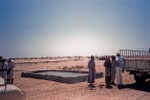
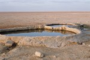
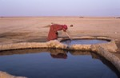
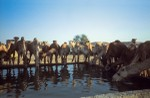
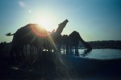
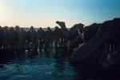
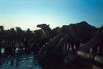
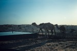
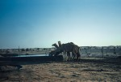
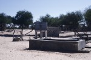
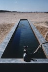
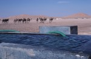
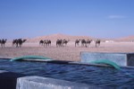
Next 18 items »
1
2